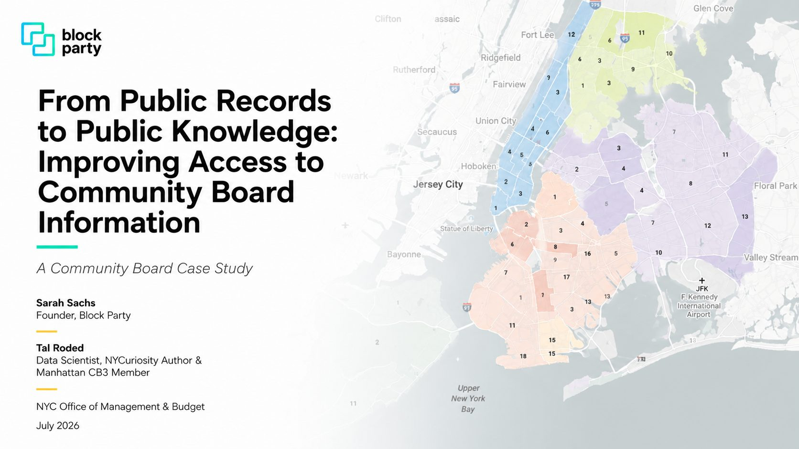
"Every month, thousands of New Yorkers spend hours participating in public meetings. Those conversations become part of the public record—but what happens to that knowledge afterward?"
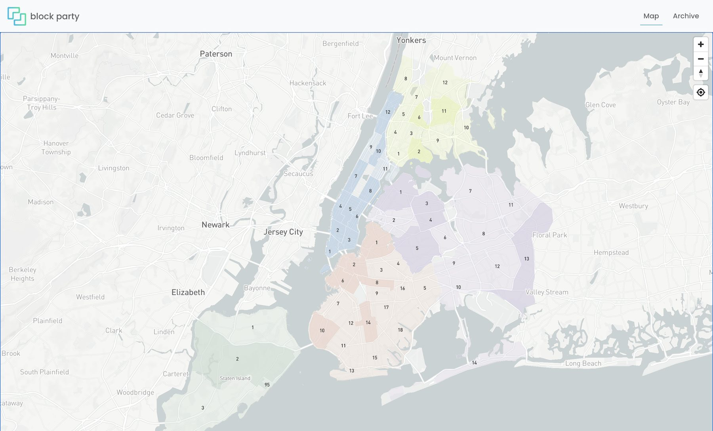
Have you ever attended a Community Board Meeting?
Most folks we ask, typically respond with a confused look...
Have you ever attended a community board meeting?
I see some nods in the virtual crowd, it looks like some of us have attended, but maybe not as much as we would like.
while some of us have attended these meetings, why are they important?
Why are Community Boards important?
local
Community boards produce more structured civic data than almost any other level of government.
Stakeholders,
Policy,
Participation,
Decisions…
Have you ever attended a community board meeting?
I see some nods in the virtual crowd, it looks like some of us have attended, but maybe not as much as we would like.
while some of us have attended these meetings, why are they important?
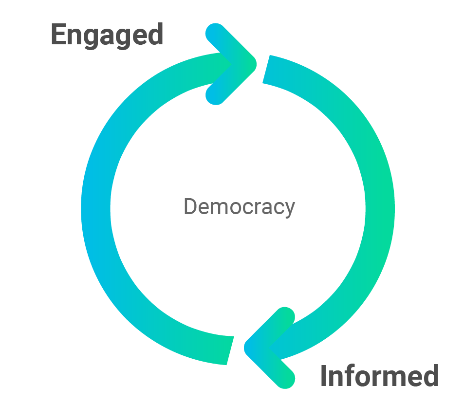
How might technology be used to help make local democracy more accessible?
Have you ever attended a community board meeting?
I see some nods in the virtual crowd, it looks like some of us have attended, but maybe not as much as we would like.
while some of us have attended these meetings, why are they important?
How might technology be used to help make local democracy more accessible?
Block Party
Have you ever attended a community board meeting?
I see some nods in the virtual crowd, it looks like some of us have attended, but maybe not as much as we would like.
while some of us have attended these meetings, why are they important?


Our Story - Cheers to the NYC Civic Tech Community!
Have you ever attended a community board meeting?
I see some nods in the virtual crowd, it looks like some of us have attended, but maybe not as much as we would like.
while some of us have attended these meetings, why are they important?
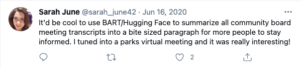
What if we could summarize the meeting information?
Have you ever attended a community board meeting?
I see some nods in the virtual crowd, it looks like some of us have attended, but maybe not as much as we would like.
while some of us have attended these meetings, why are they important?
Community Board Meetings can be inaccessible.
Had to make the transcripts ourselves…
Community Board meetings on average last 02:00:00
Had to make the transcripts ourselves…
The longest Community Board meeting in our Archive lasted 07:22:17
Had to make the transcripts ourselves…
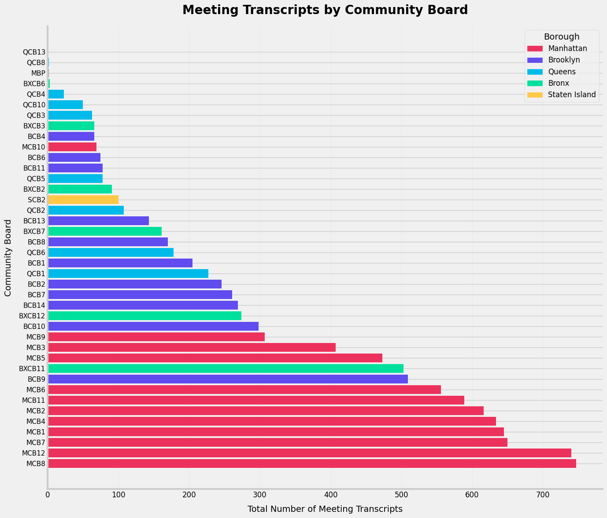
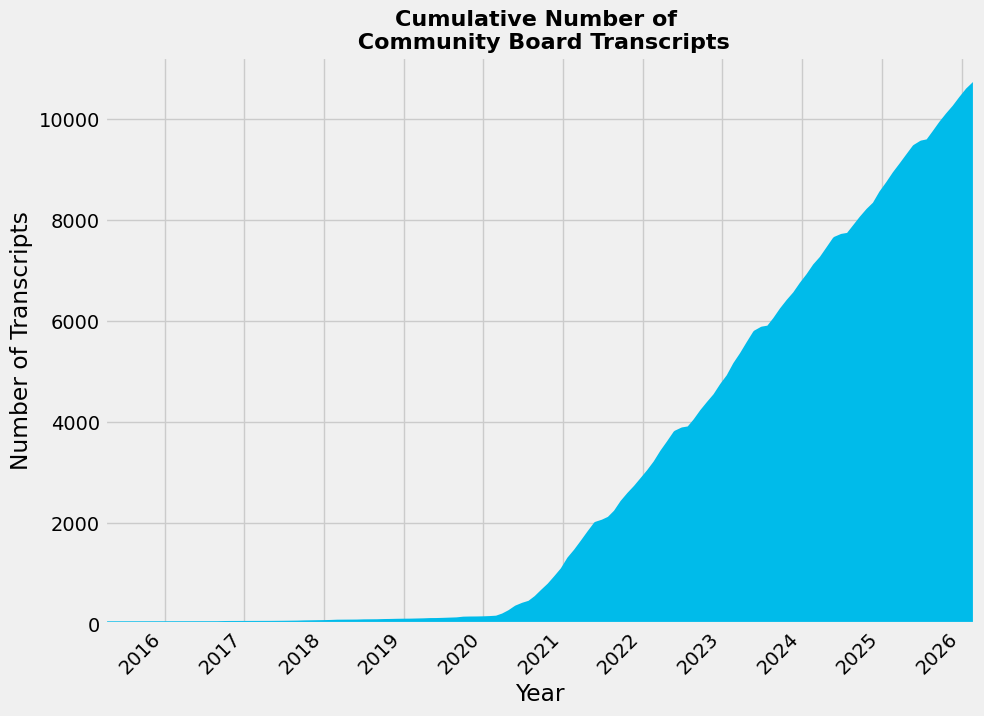
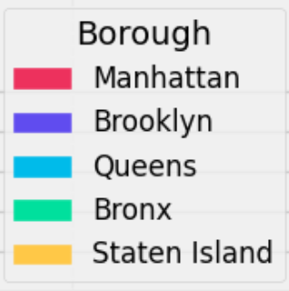
As our Archive of transcript data grew over the years, Block Party continued to evolve
Where over the past 6 years we have collected hundreds of meeting transcripts across districts representing each borough.
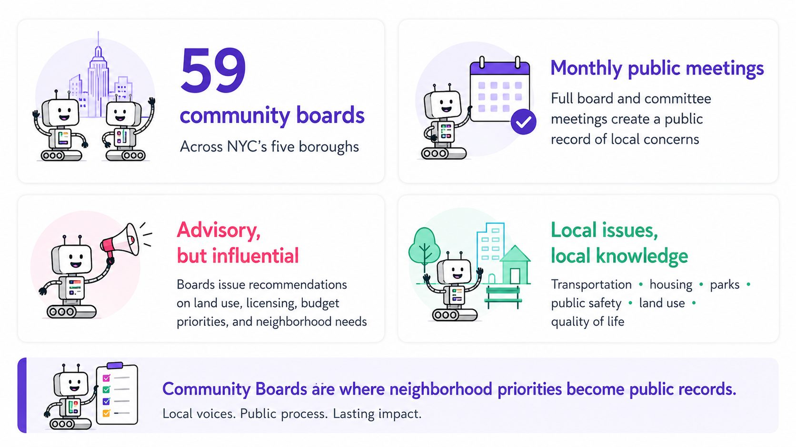
Agenda
Part 1: The Problem & Opportunity
Part 2: Our Solution & Workflow
Part 3: Demo time
Q&A
Had to make the transcripts ourselves…
The Problem & Opportunity
• The Information Problem
• What is a Resolution
• The Technology Opportunity
Had to make the transcripts ourselves…
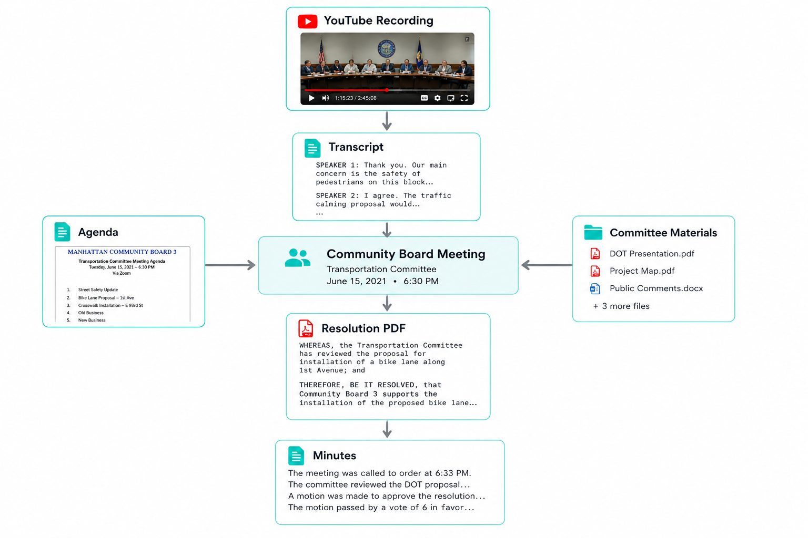
The Information Problem
The information problem, everything exists and is publicly accessible. But nothing is really connected or searchable at scale. We started with building the transcripts so we could create and share a weekly summary, as the project has evolved we are now expanding our archive into the disparate resolution PDFs which we will share our workflow. We would argue the main challenge isn’t lack of information, it’s making the public information more usable for the public engagement.
The Information Problem
Community boards are officially transparent — but practically opaque.
✅ What exists
· All meetings open to the public
· All resolutions and votes recorded publicly
· Minutes posted as PDFs or on Airtable on individual community board websites
· Documents go back to early 2000s
❌ What’s missing
· No structured database
· No search across resolutions
· No way to track a topic or location across 20 years of minutes
· Siloed PDFs, Word documents, or HTML pages with no consistent formatting or file types
What Is a Resolution?
Resolutions are official, written, public positions on a local issue.
Standard resolution format:
TITLE: One-sentence summary
WHEREAS, [context and reasoning]...
WHEREAS, [additional context]...
THEREFORE, BE IT RESOLVED,
that Community Board 3 [action]...
Community Boards vote on:
· Bar & restaurant liquor licenses
· Traffic safety improvements
· Real estate developments
· City agency requests (repaving, tree planting…)
· City-wide policy positions
tee up the tool here - but they're not accessible...
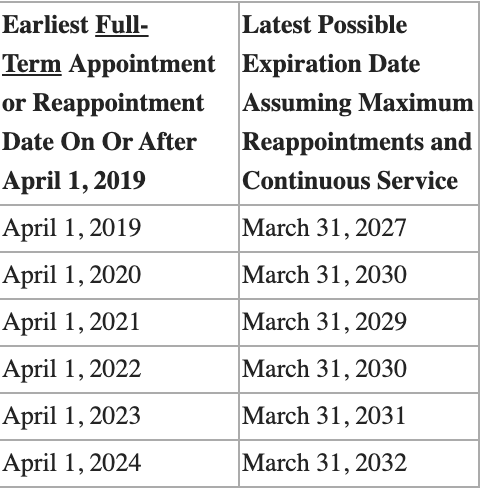
Table from the Office of the Manhattan Borough President
Community Board member term limits begin in 2027 - is local government prepared for the significant loss of institutional knowledge?
Term Limits Are Coming
This is a problem Block Party can help solve
When Key Community Decisions Become More Accessible
Analytics Opportunity
• Search thousands of resolutions by address, business name, or topic
• Track a community board’s position on recurring issues over 20+ years
• Identify patterns on controversial issues
With NLP / Embeddings
• Semantic search: ‘Find all resolutions about outdoor dining’
• Cluster resolutions by topic or location
• Detect shifts in sentiment and language over time
• Compare positions across community boards
CivicAccountability
• Flag if city agencies ignore a resolution
• Track liquor license denial → approval
• Explore how community boards respond to the needs of their district
• Knowledge base linking resolutions to the meeting discussion
Potential Insight
· What a database unlocks: Longitudinal analysis: “how has MCB3’s posture on liquor licensing changed?”
· Pattern detection: what gets denied vs. approved?
· Semantic search by address, business, or policy topic
Use case possibilities:
Extract locations that are discussed to search by business name, address, agency, permit type
When Key Community Decisions Become More Accessible
Analytics Opportunity
• Search thousands of resolutions by address, business name, or topic
• Track a community board’s position on recurring issues over 20+ years
• Identify patterns on controversial issues
With NLP / Embeddings
• Semantic search: ‘Find all resolutions about outdoor dining’
• Cluster resolutions by topic or location
• Detect shifts in sentiment and language over time
• Compare positions across community boards
CivicAccountability
• Flag if city agencies ignore a resolution
• Track liquor license denial → approval
• Explore how community boards respond to the needs of their district
• Knowledge base linking resolutions to the meeting discussion
Potential Insight
Particularly with term limits, access to institutional knowledge is even more important!
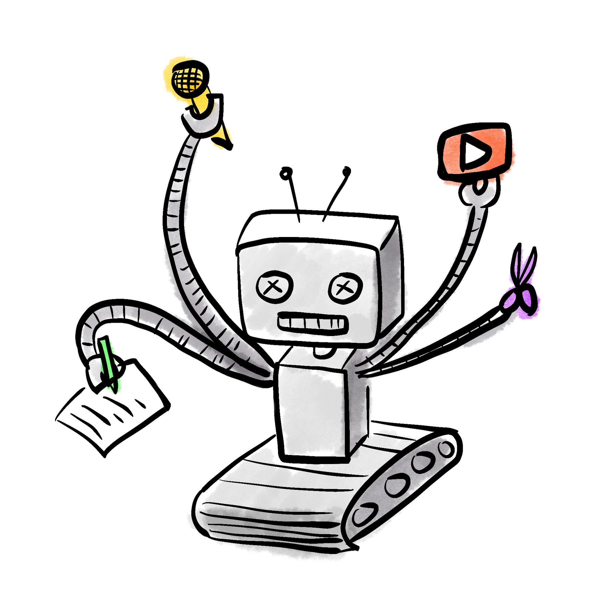
· What a database unlocks: Longitudinal analysis: “how has MCB3’s posture on liquor licensing changed?”
· Pattern detection: what gets denied vs. approved?
· Semantic search by address, business, or policy topic
Use case possibilities:
Extract locations that are discussed to search by business name, address, agency, permit type
Now we transition into Block Party’s newest feature and what we built:
Our Solution & Workflow
• Data Landscape
• How We Built It
• Archival Search and Mapping
Had to make the transcripts ourselves…
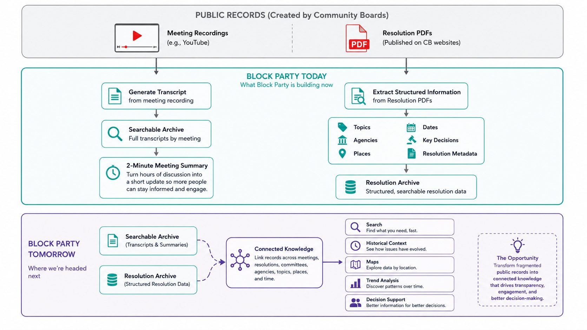


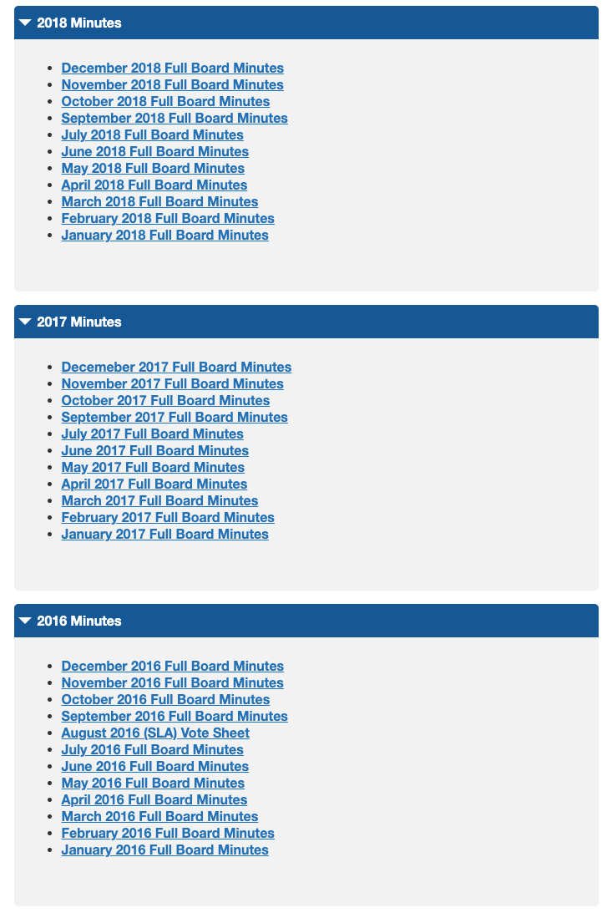
The Information Problem

Now here is what we did for resolutions. The rest of this presentation will be about Block party’s newest feature where we developed a searchable archive for community board 3 resolutions.
You would have had to click through 17 years of resolutions. Who is going to do that? This makes it searchable.
information but would take forever to read
268 meeting PDfs you have to look through manually, within those.
Create Vector Embedding
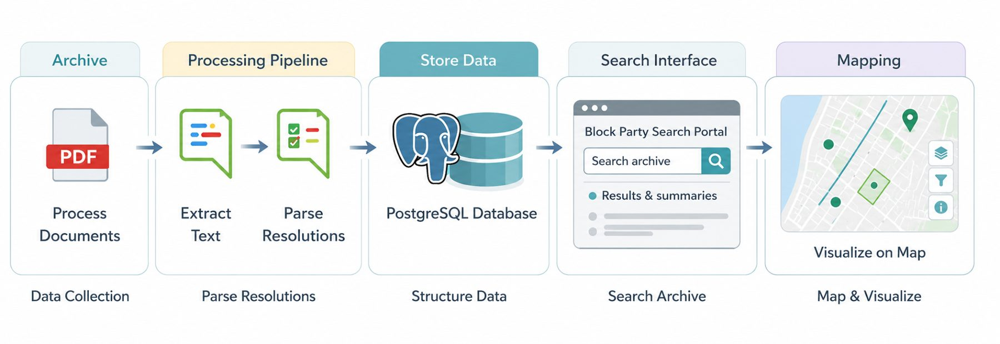
Generate Summary
Extract Entities
Locations
Entities
Topics
How We Built The Resolutions Archive
First we
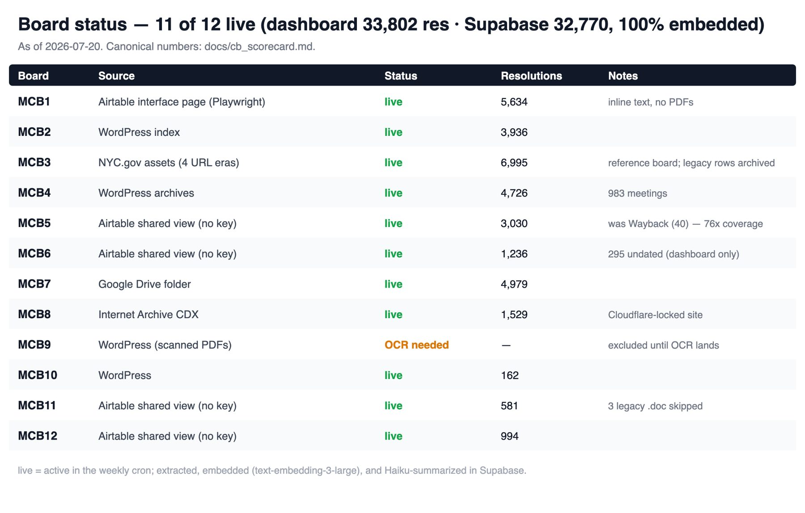
Scaling Up
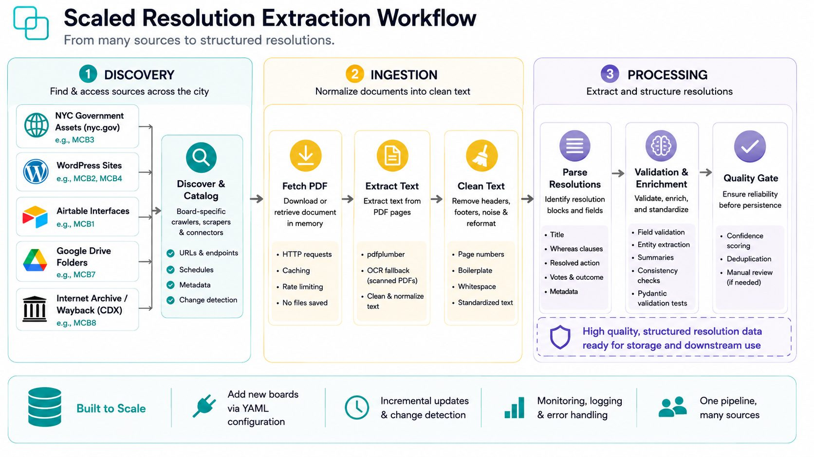


Who wants to read this?

Community concerns
Reliable data points
Locations
Entities
Topics
Next steps
Resolutions as a Data Source
We created a summary from the full resolution text in order to make the information more accessible. Here is what the full resolution looked like
Community concerns
Reliable data points
Locations
Entities
Topics
Next steps
Resolutions as a Data Source
What if we could map the locations mentioned?
We created a summary from the full resolution text in order to make the information more accessible. Here is what the full resolution looked like
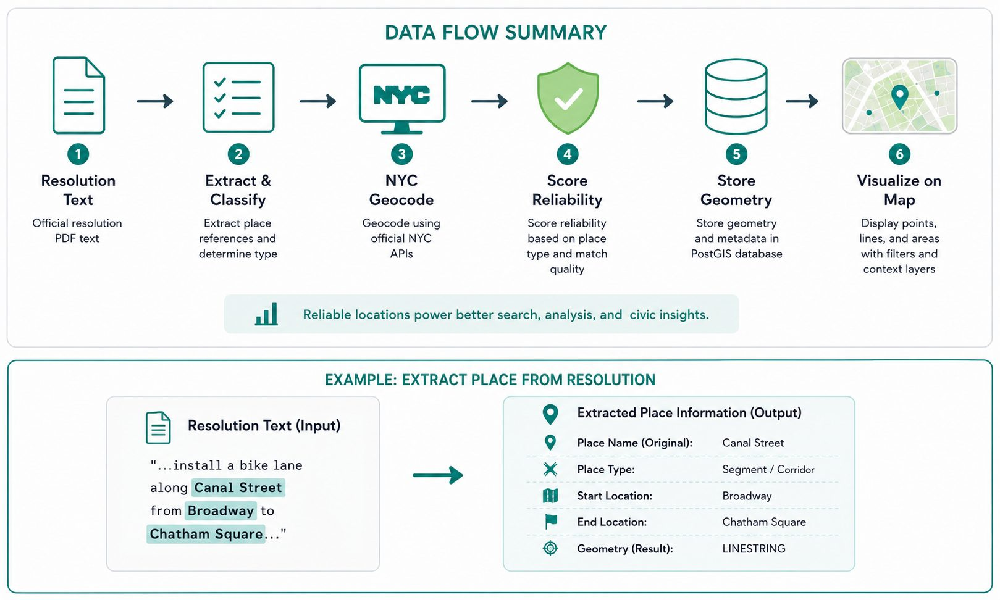
Mapping Resolutions
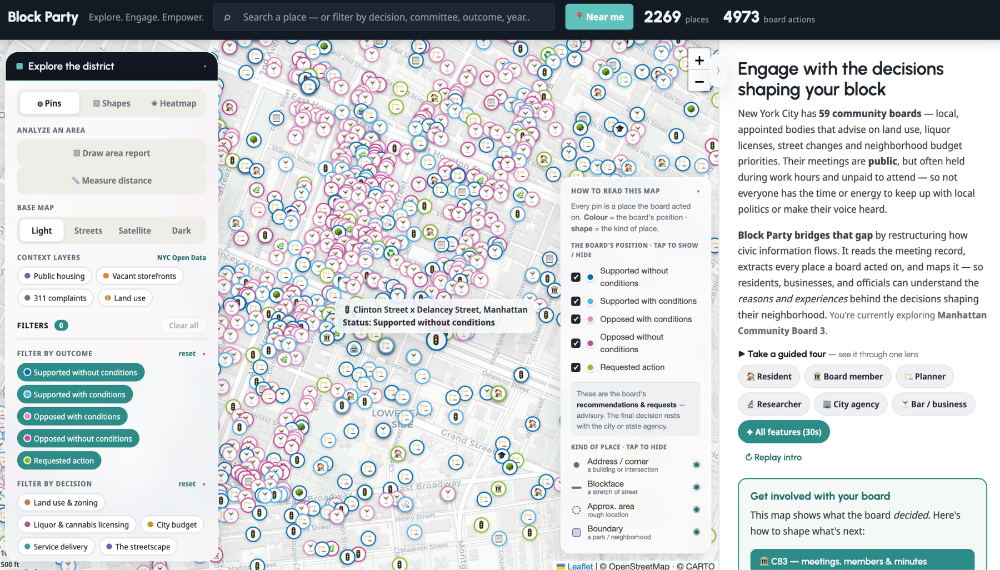
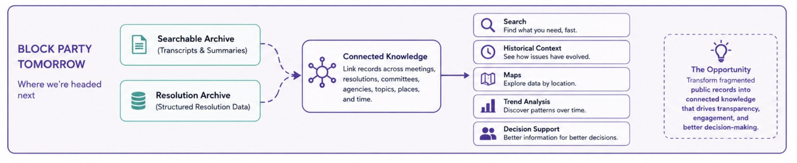
What if we could dive into the meeting discussion?
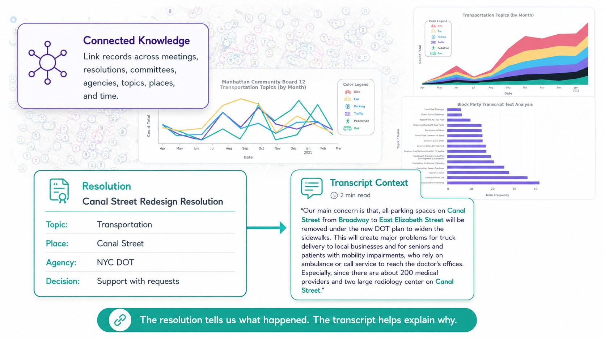
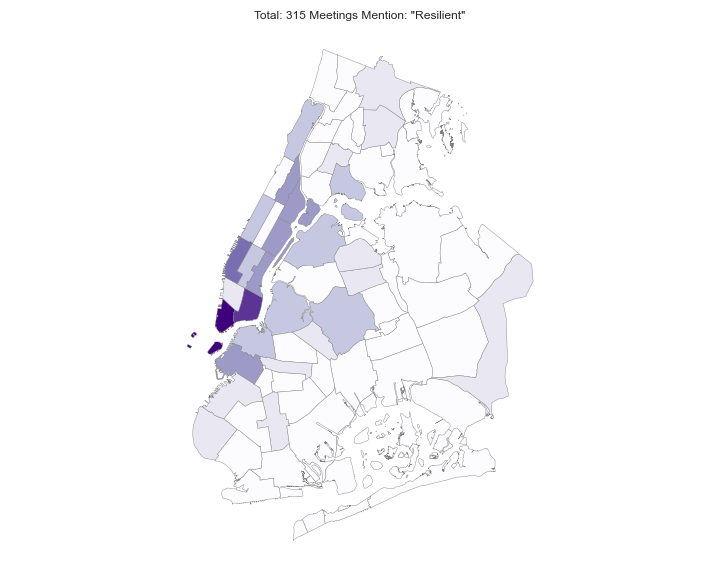
Demo Time!
Had to make the transcripts ourselves…
Q&A
blockparty.studio
blockparty.meeting@gmail.com
nycuriosity.com
Appendix
Had to make the transcripts ourselves…
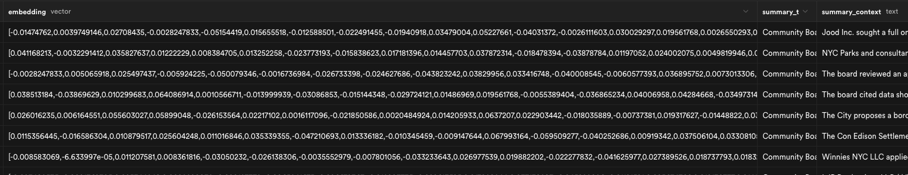
How the Extractor Works — Three-Step Pipeline
1
Fetch PDF
• HTTP request to nyc.gov
• Processed in memory—no files saved
→
2
Extract text
• pdfplumber reads all pages
• Concatenates raw text string
→
3
Parse & store
Regex splits text:
• Find resolution chunks (VOTE:)
• Split by markers TITLE:WHEREAS: THEREFORE:
Create Vector Embedding

Pause to ask if folks are familiar with vector embeddings
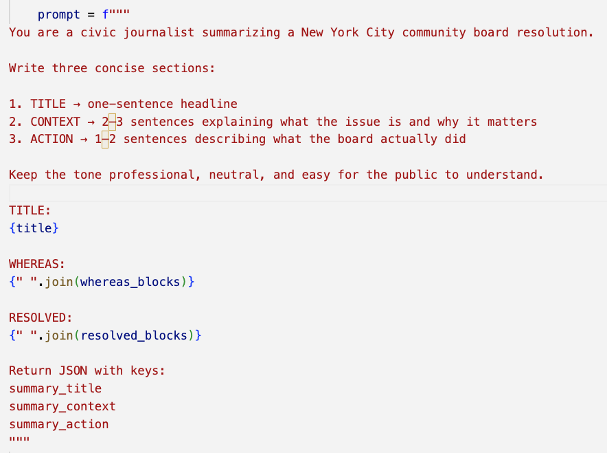
Generate Summary
• Group text chunks by each section of the resolution
• Send to a prompt
• Specify the output structure
The Source Data — Community Board Website PDFs
Community boards post all meeting minutes and resolutions publicly, but in different formats and structures.
2021 – present
manhattancb3/downloads/minutes/YYYY/minutesYYYY-MM.pdf
2004 – 2020
manhattancb3/downloads/minutes/minutesYYYY-MM.pdf
2002 – 2003
manhattancb3/cb3docs/reso-archive/MM-Name-YYYY-Resolutions.pdf
Challenge: each era has different PDF formatting, vote tally conventions, and resolution structure.
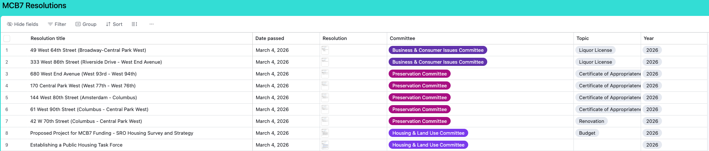
It’s exciting to see some community boards have adopted solutions like Airtable!
The scripts became one pipeline; a new board is one YAML file
discover
→
fetch
→
extract
→
parse
→
embed
→
persist
One ResolutionDocument flows through every stage; Pydantic validators guard each step.
1
domain object shared by all boards
12
board YAML configs · zero forked code
6
CLI commands · every operation repeatable
Six adapter classes cover every way a board publishes
NYCGovAssetsSource
MCB3
nyc.gov minute PDFs, four URL eras
WordPressIndexSource
MCB2
MCB4
MCB9
MCB10
scrapes the boards’ index pages
AirtableSharedViewSource
MCB5
MCB6
MCB11
MCB12
signed CSV export, no API key
AirtableInterfacePageSource
MCB1
headless browser reads the page’s own data call
GoogleDriveFolderSource
MCB7
public Drive folder of dated PDFs
WaybackCdxSource
MCB8
Internet Archive when the live site blocks crawls
The board’s YAML names its adapter; no adapter needs an API key.
Claude is now the primary parser; regex assists and checks
1 · Regex scouts
Runs first on every document; structural hints at zero token cost.
2 · Claude parses
claude-sonnet-4-6 on every document: forced tool call, strict schema, hallucinated tallies rejected.
3 · Regex checks
Boosts missed vote tallies; takes over fully if Claude returns nothing.
→
→
Trust, but verify: a deterministic 5% sample runs both parsers every week, so format drift on any board surfaces as a diff, not as silent data corruption.
Every resolution now carries text, votes, a summary, and an embedding
One resolution record
Verbatim text
every clause, with its source document and parser version
Structured vote
yes · no · abstain · outcome, parsed even from prose tallies
Three-part summary
title · context · action, written by Claude Haiku
Embeddings
text-embedding-3-large, 3,072 dims, on every chunk
A reader can trust the gist and still check the source.
The plumbing runs itself and reruns safely
GitHub Actions
Sunday delta cron
idempotent upserts
dry-run rehearsal
resolution-engine
content-addressed PDF cache
audit + report commands
regression checks between runs
Supabase
Postgres + pgvector
3 tables · numbered migrations
stable UUIDs, links never break
→
→
Battle scars included: nyc.gov blocking bot user-agents, token-limit truncation on 19-resolution meetings, streaming requirements on long extractions. Every bug the cron surfaced is now a regression test.
Eleven boards now hold 34,096 resolutions
34,096
resolutions
161,577
text chunks
100%
of chunks embedded
1984
earliest record (MCB6)
MCB3
6,995
MCB1
5,624
MCB4
4,578
MCB7
4,578
MCB2
3,899
MCB5
3,013
MCB12
1,727
MCB8
1,463
MCB11
1,121
MCB6
935
MCB10
163
March was one board and 6,511 resolutions. July is 5.2× that.
Eleven of twelve boards are live; MCB9 waits on OCR
MCB1
✓ live in Supabase
MCB2
✓ live in Supabase
MCB3
✓ live in Supabase
MCB4
✓ live in Supabase
MCB5
✓ live in Supabase
MCB6
✓ live in Supabase
MCB7
✓ live in Supabase
MCB8
✓ live in Supabase
MCB9
scanned PDFs · needs OCR
MCB10
✓ live in Supabase
MCB11
✓ live in Supabase
MCB12
✓ live in Supabase
The arc runs from one board toward all 59
boards in the corpus
1
March 2026
6,511 resolutions
11
July 2026
34,096 resolutions
12
next
MCB9 joins via OCR
59
then
every borough, citywide